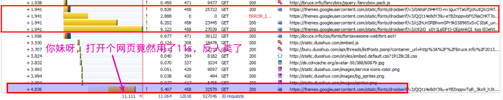
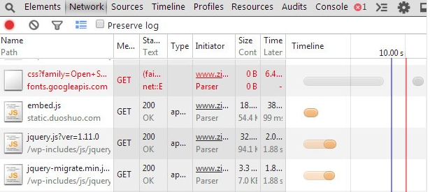
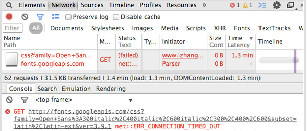

1. 为什么要开发gooreplacer？
众所周知，Google在某国造到全面封杀，导致无法访问google的一切资源。
Google在全球范围内提供一些js库、css库的CDN服务，本是一件相当好的事情，但是在某国情况就不一样了
如果一个网站引用了Google的这些库（比如stackoverflow、reddit）,那么在某国的访问速度那是真慢，不是一般的慢!
有图有真相：
  更多的我就不举例子...
gooreplacer就是为了解决这种问题而开发的。
2. gooreplacer是什么?
gooreplacer是浏览器插件，目前有Firefox版与Chrome版。
gooreplacer = a replacer for Google fonts/apis/themes...
如英文描述，gooreplacer在你打开网页时，检测是否引用了google fonts/apis/themes这些墙外的东西，如果有，进行重定向，重定向到科大为google提供的国内替换库。替换规则如下：
fonts.googleapis.com-------------->fonts.lug.ustc.edu.cn
ajax.googleapis.com--------------->ajax.lug.ustc.edu.cn
themes.googleusercontent.com------>google-themes.lug.ustc.edu.cn
fonts.gstatic.com----------------->fonts-gstatic.lug.ustc.edu.cn
3. 为什么要使用gooreplacer？
当然，如果你有(tu)钱(hao)，可以购买VPN，那么世界也是很美好！
但如果你一直用的是免费的vpn、goagent等，那么gooreplacer绝对适合你，gooreplacer可以让你秒开：
世界是残酷的， 我们(programmer)有理由把它变得美好些。Enjoy！
4. 安装gooreplacer
5. 作者与贡献者
gooreplacer由@我一个人独立开发，当然少不了网友的支持：
- 感谢@jzhone耐心为gooreplacer测试，并推荐使用科大库；
- 感谢@Semidio把Chrome版本上传到WebStore应用商店中去；
- 感谢@艾蔓草为gooreplacer提的建议与测试。
6. 支持与维护
我最初开发gooreplacer是因为不能愉快地浏览国外一些网站，加上自己的热情，gooreplacer的功能越来越丰富，我是由衷的开心。虽然还有些bug没有解决，但是我今后一定会持续更新的。
如果gooreplacer给你的生活、学习效率带来提高，我无耻地希望你能“慷慨解囊”，拿起你的支付宝钱包，打赏点零花钱请我吃个雪糕，当然这是完全自愿的。我只是想证明：我也在改变这个世界！

如果你有使用gooreplacer方面的任何问题，或有什么好的建议，可以在下面留言。让我们一起改进、完善gooreplacer。
当然，照顾到大家有可能比较害羞，可以邮件交流。:-)